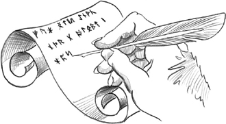

Scripts are programs written in an interpreted language that extend the facilities of an existing system. Some scripts are run as stand-alone applications, whereas others execute embedded in applications. Starting with version 4.3, Qt includes QtScript, a module that can be used to make Qt applications scriptable using ECMAScript, the standardized version of JavaScript. This module is a complete rewrite of the earlier Trolltech product Qt Script for Applications (QSA) and provides full support for ECMAScript Edition 3.
ECMAScript is the official name of the language standardized by Ecma International. It forms the basis of JavaScript (Mozilla), JScript (Microsoft), and ActionScript (Adobe). Although the language's syntax is superficially similar to C++ and Java, the underlying concepts are radically different and set it apart from most other object-oriented programming languages. In the first section of this chapter, we will quickly review the ECMAScript language and show how to run ECMAScript code using Qt. If you already know JavaScript or any other ECMAScript-based language, you can probably just skim this section.
In the second section, we will see how to add scripting support to a Qt application. This makes it possible for users to add their own functionality in addition to what the application already provides. This approach is also frequently used to make it easier to support users; technical support staff can supply bug fixes and workarounds in the form of scripts.
In the third section, we will show how to develop GUI front-ends by combining ECMAScript code and forms created using Qt Designer. This technique is appealing to developers who dislike the "compile, link, run" cycle associated with C++ development and prefer the scripting approach. It also enables users with JavaScript experience to design fully functional GUI interfaces without having to learn C++.
Finally, in the last section, we will show how to develop scripts that rely on C++ components as part of their processing. This can be done with arbitrary C++ and C++/Qt components, which don't need to have been designed with scriptability in mind. This approach is especially useful when several programs need to be written using the same basic components, or when we want to make C++ functionality available to non-C++ programmers.
This section presents a brief introduction to the ECMAScript language so that you can understand the code snippets presented in the rest of the chapter and can start writing your own scripts. The Mozilla Foundation's web site hosts a more complete tutorial at http://developer.mozilla.org/en/docs/Core_JavaScript_1.5_Guide, and David Flanagan's JavaScript: The Definitive Guide (O'Reilly, 2006) is recommended both as a tutorial and as a reference manual. The official ECMAScript specification is available online at http://www.ecmainternational.org/publications/standards/Ecma-262.htm.
The basic ECMAScript control structures—if statements, for loops, and while loops—are the same as in C++ and Java. ECMAScript also provides more or less the same assignment, relational, and arithmetic operators. ECMAScript strings support concatenation with + and appending with +=.
To get a feel for the ECMAScript syntax, we will start by studying the following program, which prints a list of all the prime numbers less than 1000:
const MAX = 1000;
var isPrime = new Array(MAX);
for (var i = 2; i < MAX; ++i)
isPrime[i] = true;
for (var i = 2; i < MAX; ++i) {
if (isPrime[i]) {
for (var j = i; i * j < MAX; ++j)
isPrime[i * j] = false;
}
}
for (var i = 2; i < MAX; ++i) {
if (isPrime[i])
print(i);
}From a C++ programmer's perspective, probably the most striking feature of ECMAScript is that variables are not explicitly typed; the var keyword is all that is required to declare a variable. Read-only variables are declared with const instead of var. Another noteworthy feature of the preceding program is that there is no main() function. Instead, code that is located outside any function is executed immediately, starting from the top of the file and working down to the bottom.
Unlike in C++, semicolons at the end of statements are generally optional in ECMAScript. Using sophisticated rules, the interpreter can insert most missing semicolons itself. Despite this, typing semicolons ourselves is recommended, to avoid unpleasant surprises.
To run the above program, we can use the qscript interpreter located in Qt's examples/script/qscript directory. If the interpreter is called with a file name as a command-line argument, the file is taken to be ECMAScript and is executed; otherwise, an interactive session begins.
If we don't provide an initial value when declaring a variable with var, the default value is undefined, a special value of type Undefined. We can later assign any value of any type to the variable using the assignment operator (=). Consider the following examples:
var x; typeof x; // returns "undefined" x = null; typeof x; // returns "null" x = true; typeof x; // returns "boolean" x = 5; typeof x; // returns "number" x = "Hello"; typeof x; // returns "string"
The typeof operator returns a lowercase string representation of the data type associated with the value stored in a variable. ECMAScript defines five primitive data types: Undefined, Null, Boolean, Number, and String. The Undefined and Null types are special types for the undefined and null constants, respectively. The Boolean type consists of two values, true and false. The Number type stores floating-point numbers. The String type stores Unicode strings.
Variables can also store objects and functions, corresponding to the data types Object and Function. For example:
x = new Array(10); typeof x; // returns "object" x = print; typeof x; // returns "function"
Like Java, ECMAScript distinguishes between primitive data types and object types. Primitive data types behave like C++ value types, such as int and QString. These are created without the new operator and are copied by value. In contrast, object types must be created using the new operator, and variables of these types store only a reference (a pointer) to the object. When allocating objects with new, we do not need to worry about releasing their memory, since the garbage collector does this automatically.
If we assign a value to a variable without declaring it first using the var keyword, the variable will be created as a global variable. And if we try to read the value of a variable that doesn't exist, we get a ReferenceError exception. We can catch the exception using a try ... catch statement, as follows:
try {
print(y);
} catch (e) {
print(e.name + ": " + e.message);
}If the variable y does not exist, the message "ReferenceError: y is not defined" is printed on the console.
If undefined variables can cause havoc in our programs, so can variables that are defined but that hold the undefined constant—the default value if no initializer is provided when declaring a variable using var. To test for undefined, we can use the strict comparison operators === or !==. For example:
var x;
...
var y = 0;
if (x !== undefined)
y = x;The familiar == and != comparison operators are also available in ECMAScript, but unlike === and !==, they sometimes return true when the compared values have different types. For example, 24 == "24" and null == undefined return true, whereas 24 === "24" and null === undefined return false.
We will now review a more complex program that illustrates how to define our own functions in ECMAScript:
function square(x)
{
return x * x;
}
function sumOfSquares(array)
{
var result = 0;
for (var i = 0; i < array.length; ++i)
result += square(array[i]);
return result;
}
var array = new Array(100);
for (var i = 0; i < array.length; ++i)
array[i] = (i * 257) % 101;
print(sumOfSquares(array));Functions are defined using the function keyword. In keeping with ECMAScript's dynamic nature, the parameters are declared with no type, and the function has no explicit return type.
By looking at the code, we can guess that square() should be called with a Number and that sumOfSquares() should be called with an Array object, but this doesn't have to be the case. For example, square("7") will return 49, because ECMAScript's multiplication operator will convert strings to numbers in a numeric context. Similarly, the sumOfSquare() function will work not only for Array objects but also for other objects that have a similar interface.
In general, ECMAScript applies the duck typing principle: "If it walks like a duck and quacks like a duck, it must be a duck". This stands in contrast to the strong typing used by C++ and Java, where parameter types must be declared and arguments must match the declared types.
In the preceding example, sumOfSquares() was hard-coded to apply square() on each element of the array. We can make it more flexible by letting it accept a unary function as the second argument and renaming it sum():
function sum(array, unaryFunc)
{
var result = 0;
for (var i = 0; i < array.length; ++i)
result += unaryFunc(array[i]);
return result;
}
var array = new Array(100);
for (var i = 0; i < array.length; ++i)
array[i] = (i * 257) % 101;
print(sum(array, square));The call sum(array, square) is equivalent to sumOfSquares(array). Instead of defining a square() function, we can also pass an anonymous function to sum():
print(sum(array, function(x) { return x * x; }));And instead of defining an array variable, we can pass an array literal:
print(sum([4, 8, 11, 15], function(x) { return x * x; }));ECMAScript lets us supply more arguments to a function than there are parameters declared. The extra arguments are accessible through the arguments array. Consider the following example:
function sum(unaryFunc)
{
var result = 0;
for (var i = 1; i < arguments.length; ++i)
result += unaryFunc(arguments[i]);
return result;
}
print(sum(square, 1, 2, 3, 4, 5, 6));Here, the sum() function is defined to take a variable number of arguments. The first argument is the function that we want to apply. The other arguments are the numbers that we want to sum. When iterating over the arguments array, we must skip the item at index position 0 because it corresponds to unaryFunc, the unary function. We could also omit the unaryFunc parameter from the parameter list and extract it from the arguments array:
function sum()
{
var unaryFunc = arguments[0];
var result = 0;
for (var i = 1; i < arguments.length; ++i)
result += unaryFunc(arguments[i]);
return result;
}The arguments array can be used to overload the behavior of functions based on the types of the arguments or on their number. For example, suppose that we want to let sum() take an optional unary argument followed by a list of numbers, allowing us to invoke it as follows:
print(sum(1, 2, 3, 4, 5, 6)); print(sum(square, 1, 2, 3, 4, 5, 6));
Here's how we can implement sum() to support this:
function sum()
{
var unaryFunc = function(x) { return x; };
var i = 0;
if (typeof arguments[0] == "function") {
unaryFunc = arguments[0];
i = 1;
}
var result = 0;
while (i < arguments.length)
result += unaryFunc(arguments[i++]);
return result;
}If we supply a function as the first argument, that function is applied to each number before it is added to the sum; otherwise, we use the identity function function(x) { return x; }.
For C++ programmers, arguably the most difficult aspect of ECMAScript is its object model. ECMAScript is an object-based object-oriented language, setting it apart from C++, C#, Java, Simula, and Smalltalk, which are all class-based. Instead of a class concept, ECMAScript provides us with lower-level mechanisms that let us achieve the same results.
The first mechanism that lets us implement classes in ECMAScript is that of a constructor. A constructor is a function that can be invoked using the new operator. For example, here is a constructor for a Shape object:
function Shape(x, y) {
this.x = x;
this.y = y;
}The Shape constructor has two parameters and initializes the new object's x and y properties (member variables) based on the values passed to the constructor. The this keyword refers to the object being created. In ECMAScript, an object is essentially a collection of properties; properties can be added, removed, or modified at any time. A property is created the first time it is set, so when we assign to this.x and this.y in the constructor, the x and y properties are created as a result.
A common mistake for C++ and Java developers is to forget the this keyword when accessing object properties. In the preceding example, this would have been unlikely, because a statement such as x = x would have looked very suspicious, but in other examples this would have led to the creation of spurious global variables.
To instantiate a Shape object, we use the new operator as follows:
var shape = new Shape(10, 20);
If we use the typeof operator on the shape variable, we obtain Object, not Shape, as the data type. If we want to determine whether an object has been created using the Shape constructor, we can use the instanceof operator:
var array = new Array(100); array instanceof Shape; // returns false var shape = new Shape(10, 20); shape instanceof Shape; // returns true
ECMAScript lets any function serve as a constructor. However, if the function doesn't perform any modifications to the this object, it doesn't make much sense to invoke it as a constructor. Conversely, a constructor can be invoked as a plain function, but again this rarely makes sense.
In addition to the primitive data types, ECMAScript provides built-in constructors that let us instantiate fundamental object types, notably Array, Date, and RegExp. Other constructors correspond to the primitive data types, allowing us to create objects that store primitive values. The valueOf() member function lets us retrieve the primitive value stored in the object. For example:
var boolObj = new Boolean(true); typeof boolObj; // returns "object" var boolVal = boolObj.valueOf(); typeof boolVal; // returns "boolean"
Figure 22.1 lists the built-in global constants, functions, and objects provided by ECMAScript. In the next section, we will see how to supplement this built-in functionality with additional, application-specific components written in C++.
| Constants | |
| NaN | IEEE 754 Not-a-Number (NaN) value |
| Infinity | Positive infinity (+ ) ) |
| undefined | Default value for uninitialized variables |
| Functions | |
| print(x)[*] | Prints a value on the console |
| eval(str) | Executes an ECMAScript program |
| parseInt(str, base) | Converts a string to an integer value |
| parseFloat(str) | Converts a string to a floating-point value |
| isNaN(n) | Returns true if n is NaN |
| isFinite(n) | Returns true if n is a number other than NaN, +, or - |
| decodeURI(str) | Converts an 8-bit-encoded URI to Unicode |
| decodeURIComponent(str) | Converts an 8-bit-encoded URI component to Unicode |
| encodeURI(str) | Converts a Unicode URI to an 8-bit-encoded URI |
| encodeURIComponent(str) | Converts a Unicode URI component to 8-bit-encoded |
[*] Not specified by the ECMAScript standard.
| Classes (Constructors) | |
| Object | Provides functionality common to all objects |
| Function | Encapsulates an ECMAScript function |
| Array | Represents a resizable vector of items |
| String | Stores a Unicode string |
| Boolean | Stores a Boolean value (true or false) |
| Number | Stores a floating-point number |
| Date | Stores a date and time |
| RegExp | Provides regular expression pattern matching |
| Error | Base type for error types |
| EvalError | Raised when using eval() wrongly |
| RangeError | Raised when a numeric value is outside the legal range |
| ReferenceError | Raised when trying to access an undefined variable |
| SyntaxError | Raised when a syntax error is detected by eval() |
| TypeError | Raised when an argument has the wrong type |
| URIError | Raised when URI parsing fails |
| Object | |
| Math | Provides mathematical constants and functions |
We have seen how to define a constructor in ECMAScript and how to add member variables to the constructed object. Normally, we also want to define member functions. Because functions are treated as first-class citizens in ECMAScript, this turns out to be surprisingly easy. Here's a new version of the Shape constructor, this time with two member functions, manhattanPos() and translate():
function Shape(x, y) {
this.x = x;
this.y = y;
this.manhattanPos = function() {
return Math.abs(this.x) + Math.abs(this.y);
};
this.translate = function(dx, dy) {
this.x += dx;
this.y += dy;
};
}We can then invoke the member functions using the . (dot) operator:
var shape = new Shape(10, 20);
shape.translate(100, 100);
print(shape.x + ", " + shape.y + " (" + shape.manhattanPos() + ")");With this approach, each Shape instance has its own manhattanPos and translate properties. Since these properties should be identical for all Shape instances, it is desirable to store them only once rather than in every instance. ECMAScript lets us achieve this by using a prototype. A prototype is an object that serves as a fallback for other objects, providing an initial set of properties. One advantage of this approach is that it is possible to change the prototype object at any time and the changes are immediately reflected in all objects that were created with that prototype.
Consider the following example:
function Shape(x, y) {
this.x = x;
this.y = y;
}
Shape.prototype.manhattanPos = function() {
return Math.abs(this.x) + Math.abs(this.y);
};
Shape.prototype.translate = function(dx, dy) {
this.x += dx;
this.y += dy;
};In this version of Shape, we create the manhattanPos and translate properties outside the constructor, as properties of the Shape.prototype object. When we instantiate a Shape, the newly created object keeps an internal pointer back to Shape.prototype. Whenever we retrieve the value of a property that doesn't exist in our Shape object, the property is looked up in the prototype as a fallback. Thus, the Shape prototype is the ideal place to put member functions, which should be shared by all Shape instances.
It might be tempting to put all sorts of properties that we want to share between Shape instances in the prototype, similar to C++'s static member variables or Java's class variables. This idiom works for read-only properties (including member functions) because the prototype acts as a fallback when we retrieve the value of a property. However, it doesn't work as expected when we try to assign a new value to the shared variable; instead, a fresh variable is created directly in the Shape object, shadowing any property of the same name in the prototype. This asymmetry between read and write access to a variable is a frequent source of confusion for novice ECMAScript programmers.
In class-based languages such as C++ and Java, we can use class inheritance to create specialized object types. For example, we would define a Shape class and then derive Triangle, Square, and Circle from Shape. In ECMAScript, a similar effect can be achieved using prototypes. The following example shows how to define Circle objects that are also Shape instances:
function Shape(x, y) {
this.x = x;
this.y = y;
}
Shape.prototype.area = function() { return 0; };
function Circle(x, y, radius) {
Shape.call(this, x, y);
this.radius = radius;
}
Circle.prototype = new Shape;
Circle.prototype.area = function() {
return Math.PI * this.radius * this.radius;
};We start by defining a Shape constructor and associate an area() function with it, which always returns 0. Then we define a Circle constructor, which calls the "base class" constructor using the call() function defined for all function objects (including constructors), and we add a radius property. Outside the constructor, we set the Circle's prototype to be a Shape object, and we override Shape's area() function with a Circle-specific implementation. This corresponds to the following C++ code:
class Shape
{
public:
Shape(double x, double y) {
this->x = x;
this->y = y;
}
virtual double area() const { return 0; }
double x;
double y;
};
class Circle : public Shape
{
public:
Circle(double x, double y, double radius)
: Shape(x, y)
{
this->radius = radius;
}
double area() const { return M_PI * radius * radius; }
double radius;
};
The instanceof operator walks through the prototype chain to determine which constructors have been invoked. As a consequence, instances of a subclass are also considered to be instances of the base class:
var circle = new Circle(0, 0, 50); circle instanceof Circle; // returns true circle instanceof Shape; // returns true circle instanceof Object; // returns true circle instanceof Array; // returns false
This concludes our short introduction to ECMAScript. In the following sections, we will show how to use this language in conjunction with C++/Qt applications to provide more flexibility and customizability to end-users or simply to speed up the development process.